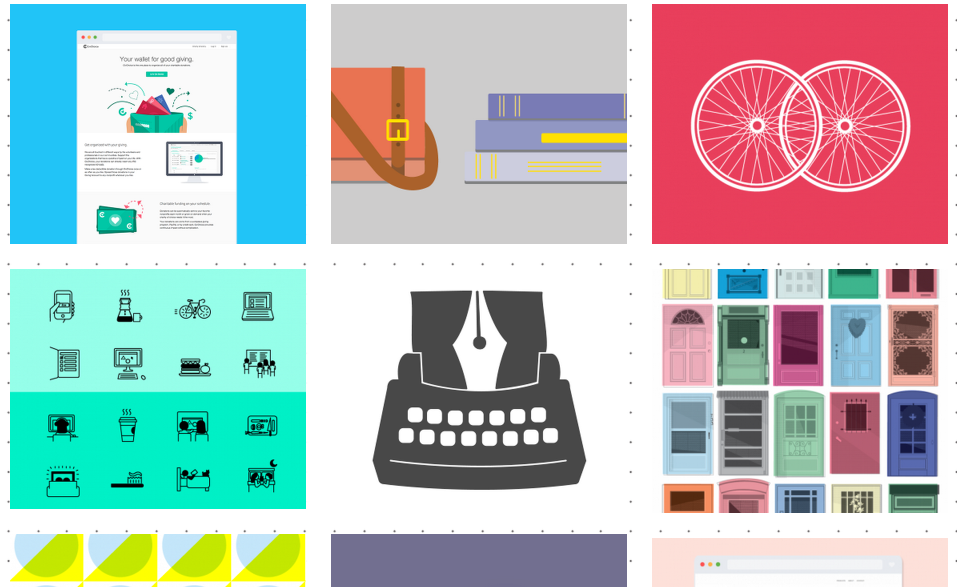
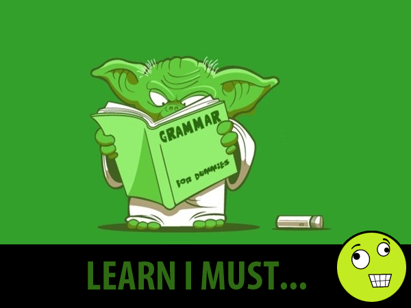

<!doctype html>
<html lang="en">

	<head>
		<meta charset="utf-8">

		<title>Jekyll and Reveal.js</title>

		<meta name="description" content="A framework for easily creating beautiful presentations using HTML">
		<meta name="author" content="Hakim El Hattab">

		<meta name="apple-mobile-web-app-capable" content="yes" />
		<meta name="apple-mobile-web-app-status-bar-style" content="black-translucent" />

		<meta name="viewport" content="width=device-width, initial-scale=1.0, maximum-scale=1.0, user-scalable=no">

		<link rel="stylesheet" href="reveal.js/css/reveal.min.css">
		<link rel="stylesheet" href="theme/sky.css" id="theme">

		<!-- For syntax highlighting -->
		<link rel="stylesheet" href="reveal.js/lib/css/zenburn.css">

		<!-- If the query includes 'print-pdf', use the PDF print sheet -->
		<script>
			document.write( '<link rel="stylesheet" href="reveal.js/css/print/' + ( window.location.search.match( /print-pdf/gi ) ? 'pdf' : 'paper' ) + '.css" type="text/css" media="print">' );
		</script>

		<!--[if lt IE 9]>
		<script src="reveal.js/lib/js/html5shiv.js"></script>
		<![endif]-->
	</head>

	<body>

		<div class="reveal">

            <div class="slides">


<section data-markdown data-separator="^\n---\n$" data-vertical="^\n--\n$" data-notes="^Note:">
<script type="text/template">
## Coqui Love


</script>
</section>

<section data-markdown data-separator="^\n---\n$" data-vertical="^\n--\n$" data-notes="^Note:">
<script type="text/template">
## Clara Gonzalez Sueyro


--

### She's A Crazy Rabbit


--

### She's An Amazing Interviewer


But she would probably laugh at me for picking this pic <!-- .element: class="fragment" -->

Also, she never made fun of me for my [lack of] design skill <!-- .element: class="fragment" -->

--

### She Listens to my crazy ideas


Even the super crazy ones. <!-- .element: class="fragment" -->

And supports me no matter how crazy she thinks they are <!-- .element: class="fragment" -->

--

### She Also helped me find a house


And totally unrelated -- she's really good at telling people to shut up <!-- .element: class="fragment" -->

Also unrelated -- she is very Argentinian.  Maybe related <!-- .element: class="fragment" -->


</script>
</section>

<section data-markdown data-separator="^\n---\n$" data-vertical="^\n--\n$" data-notes="^Note:">
<script type="text/template">
## Ainsley Wagoner


--

### She's An Awesome Huggy Bear


--

### She's has ridiculously mad design skill


AinsleyWagoner.com  is pretty damn badass <!-- .element: class="fragment" -->

HumedadSanJuan.com design is all her. That's all I need to say. <!-- .element: class="fragment" -->

She never made fun of me for my [lack of] design skill <!-- .element: class="fragment" -->

--

### She's From Kentucky and She's Awesome!


Her site says so. <!-- .element: class="fragment" -->

Also, BeyoncePerfect.com to fully legitimize the awesomeness. <!-- .element: class="fragment" -->

--

### Always excited and willing to learn



She's slowly but surely becoming a git ninja <!-- .element: class="fragment" -->

Me: Are you up for learning a new language - Jade? <!-- .element: class="fragment" -->

Ainsley: Nope..... Yup! <!-- .element: class="fragment" -->


</script>
</section>

<section data-markdown data-separator="^\n---\n$" data-vertical="^\n--\n$" data-notes="^Note:">
<script type="text/template">
## Why I Love My Lady Coquis
<div id="container" style="width:100%; text-align:center">


</div>

--

### Cuz they cook for me


Fully aknowledging and accepting that my cooking skills start and end at omelettes <!-- .element: class="fragment" -->

--

### Cuz they're fun


Because they are not ashamed to try to fly a kite and fail. <!-- .element: class="fragment" -->

Because they'll work on funny stupid projects with me. <!-- .element: class="fragment" -->

--

### Cuz They're Smart


They balance me out super well and are highly intelligent. <!-- .element: class="fragment" -->

They're REALLY damn good at what they do. <!-- .element: class="fragment" -->

--

### Cuz...

There's no other possible combination... <!-- .element: class="fragment" -->

Of Fellows... <!-- .element: class="fragment" -->

In Code For America this year... <!-- .element: class="fragment" -->

That I would pick to replace my lady Coquis <!-- .element: class="fragment" -->


</script>
</section>


            </div>

		</div>

		<script src="reveal.js/lib/js/head.min.js"></script>
		<script src="reveal.js/js/reveal.min.js"></script>

		<script>

			// Full list of configuration options available here:
			// https://github.com/hakimel/reveal.js#configuration
			Reveal.initialize({
				controls: true,
				progress: true,
				history: true,
				center: true,

				theme: Reveal.getQueryHash().theme, // available themes are in /css/theme
				transition: 'concave', // default/cube/page/concave/zoom/linear/fade/none
                autoSlide: 55555000,
                autoSlideStoppable: true,


				// Optional libraries used to extend on reveal.js
				dependencies: [
					{ src: 'reveal.js/lib/js/classList.js', condition: function() { return !document.body.classList; } },
					{ src: 'reveal.js/plugin/markdown/marked.js', condition: function() { return !!document.querySelector( '[data-markdown]' ); } },
					{ src: 'reveal.js/plugin/markdown/markdown.js', condition: function() { return !!document.querySelector( '[data-markdown]' ); } },
					{ src: 'reveal.js/plugin/highlight/highlight.js', async: true, callback: function() { hljs.initHighlightingOnLoad(); } },
					{ src: 'reveal.js/plugin/zoom-js/zoom.js', async: true, condition: function() { return !!document.body.classList; } },

					{ src: 'reveal.js/plugin/notes/notes.js', async: true, condition: function() { return !!document.body.classList; } }


				]
			});

		</script>

	</body>
</html>
